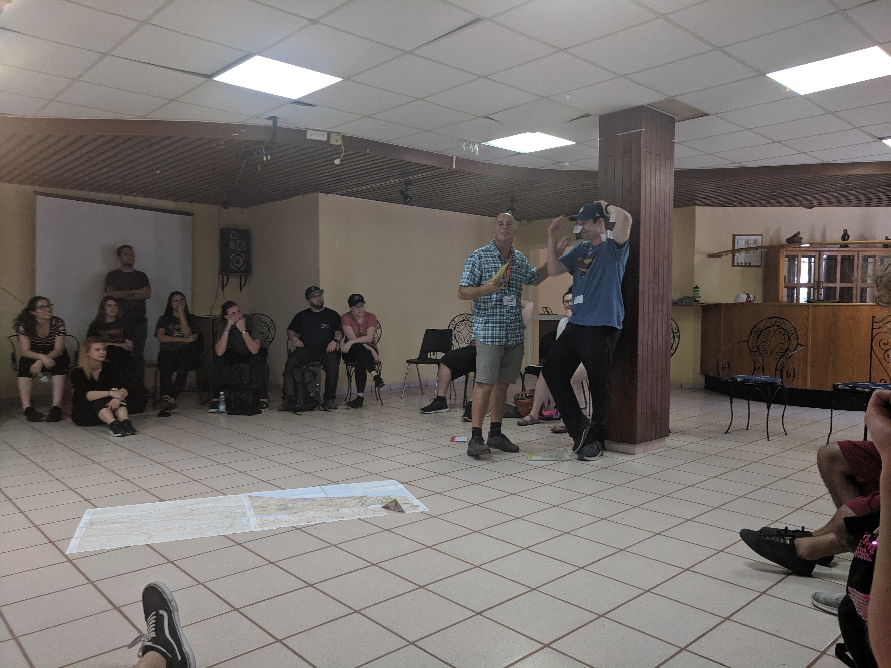

Taglit-Birthright
I spent the past two weeks traveling across Israel as part of Taglit Birthright Israel on Bus 657 with approximately 40 Americans and 10 Israelis. Our trip was hosted by Shorashim, which differs from most trips in that our Israelis traveled with us for the entire trip. As described on the Birthright Israel website, "Birthright Israel aims to strengthen Jewish identity, Jewish communities, and connection with Israel and its people." The following is my recollection of the trip and its highlights.

Day 1 - Afik Kibbutz Orchan and Shehecheyanu Ceremony

 We were greeted at the airport by our Israeli participants and our Israeli guide,
Itamar Bouton, who would prove himself to
be an enthusiastic, knowledgeable and humorous leader over the course of the trip. He gave three
simple rules to follow: don't be stupid, don't be a jerk, and don't be late!
We were greeted at the airport by our Israeli participants and our Israeli guide,
Itamar Bouton, who would prove himself to
be an enthusiastic, knowledgeable and humorous leader over the course of the trip. He gave three
simple rules to follow: don't be stupid, don't be a jerk, and don't be late!
We immediately left Ben Gurion airport in Tel Aviv, heading Northeast to an Israeli settlement in the Golan Heights called Afik, where we spent the first two nights at our first Kibbutz. Unbeknownst to me at the time, Wikipedia states that the kibbutz is the first Israeli kibbutz in Golan Heights and is considered an illegal settlement under international law. I was unable to learn when the kibbutz was established, but the Jewish Virtual Library suggests that kibbutzim in the Golan Heights predate Israeli control, although no kibbutz was in Afik prior to Israel capturing the Golan Heights during the Six Day War.
The kibbutz was lush and gorgeous. I was surprised to learn that the history of kibbutzim in Israel is closely intertwined with Marxist/Communist elements; one of the pioneers wrote that, "We were happy enough working on the land, but we knew more and more certainly that the ways of the old settlements were not for us. This was not the way we hoped to settle the country—this old way with Jews on top and Arabs working for them; anyway, we thought that there shouldn't be employers and employed at all. There must be a better way." Decisions are made communally and (at least historically) resources and chores were shared. The captial necessary to purchase land came in the form of small donations from Jews across Europe.


 Our guide Itamar gave us a preview of where we would travel and what we would do over
the course of the trip, using Ben as a makeshift map of Israel. The final activity
of the day was the Shehecheyanu
during sunset. Shehecheyanu is a common Jewish prayer used to celebrate new experiences.
Our guide Itamar gave us a preview of where we would travel and what we would do over
the course of the trip, using Ben as a makeshift map of Israel. The final activity
of the day was the Shehecheyanu
during sunset. Shehecheyanu is a common Jewish prayer used to celebrate new experiences.
Day 2 - Hiking, Golan Heights and Rafting
On Day 2, an 18-year old Israeli named Dvir Sorek was killed by two Palestinians, one who was a member of Hamas, a constant reminder of the security challenges facing Israel. Sorek was stabbed to death in his West Bank settlement of Migdal Oz, where he was a seminary and military student. His body was discovered the next morning and his killers were captured alive within three days. Hamas claimed that the attack was retaliation for Israeli destruction of Palestinian residential buildings in late July 2019. Over breakfast, we asked one of the Israelis traveling with us for her perspective regarding Palestinians and the Israeli Defense Force (IDF), and one comment she made stuck with me: she claimed that the IDF is exclusively a defense force and as justification, she emphasized that the word "defense" is the "D" in "IDF." A disappointing answer. Days later, I would learn that she herself is from a West Bank settlement called Adora, which was attacked during the second intifada. Four of her townspeople were killed when two attackers dressed as IDF soldiers, cut through the security fence and went house to house shooting children while families were praying for Shabbat. One of the dead was a young girl close in age to my Israeli companion. An attacker was later released as part of a trade for an IDF prisoner of war.

 To start the day, we went for a nice hike. Halfway through the hike, we encountered a
delightful pond that we went swimming in. Our wet clothes proved to be a good defense
against the growing heat of the day. As we passed over all kinds of interesting rocks,
we learned that the Golan Heights was formerly seismically active.
Consequently, the mountains that were formed act as a watershed that funnels
clean rainwater into the Sea of Galilee, where it can be used for drinking and
agriculture. This clarified why Israel is so determined to hold onto the Golan
Heights; in a war, Syria could cut off roughly 10% of Israel's water supply, and
indeed, the Arab League
tried to do exactly that leading up to the Six Day War.
To start the day, we went for a nice hike. Halfway through the hike, we encountered a
delightful pond that we went swimming in. Our wet clothes proved to be a good defense
against the growing heat of the day. As we passed over all kinds of interesting rocks,
we learned that the Golan Heights was formerly seismically active.
Consequently, the mountains that were formed act as a watershed that funnels
clean rainwater into the Sea of Galilee, where it can be used for drinking and
agriculture. This clarified why Israel is so determined to hold onto the Golan
Heights; in a war, Syria could cut off roughly 10% of Israel's water supply, and
indeed, the Arab League
tried to do exactly that leading up to the Six Day War.

 Our final activity of the day was rafting
Our final activity of the day was rafting
Day 3 - Tzfat and the Kabbalah


Day 4 - The Israel Museum and the Western Wall


 The Instagram shots continued...
The Instagram shots continued...

Day 5 - Jerusalem, Ein Karem and Bae Mitzvah


Day 6 - Yad Vashem and Tel Aviv
 Yad Vashem is Israel's Holocaust Memorial.
Photos aren't permitted inside, so I have very few. I'll share one photo that I snuck
because the story touched me. As the picture reads, Roza Robota
was interned at Auschwitz where she smuggled explosives to resistance fighters
who used her explosives to destroy one of the crematoriums. While her courage was
commendable, the reason her memory stayed with me was that when she was captured,
she refused to name her co-conspirators, even under torture. As I
stood in the memorial, I imagined that her story was the inspiration for Evey's
torture scene in V for Vendetta, a scene in which a woman condemned to die in a concentration
camp realizes that her integrity matters more to her than her life. I can't do the
scene justice in words, but it's one of the most moving film scenes I've seen:
Yad Vashem is Israel's Holocaust Memorial.
Photos aren't permitted inside, so I have very few. I'll share one photo that I snuck
because the story touched me. As the picture reads, Roza Robota
was interned at Auschwitz where she smuggled explosives to resistance fighters
who used her explosives to destroy one of the crematoriums. While her courage was
commendable, the reason her memory stayed with me was that when she was captured,
she refused to name her co-conspirators, even under torture. As I
stood in the memorial, I imagined that her story was the inspiration for Evey's
torture scene in V for Vendetta, a scene in which a woman condemned to die in a concentration
camp realizes that her integrity matters more to her than her life. I can't do the
scene justice in words, but it's one of the most moving film scenes I've seen:
Day 7 - Gentrification in Tel Aviv and Bedouins in the Negev


Day 8 - Masada and Ben Gurion Tomb


Day 9 - Ben Gurion National Park and Mount Herzl


Day 10 - Farewells